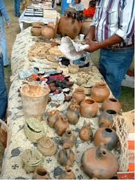

Cultura indígena
Conjunto de tradiciones, lenguas, creencias, conocimientos y costumbres de los pueblos originarios de México. Representa la herencia de civilizaciones prehispánicas que, a pesar de la colonización, han logrado preservar su identidad. La cultura indígena es parte fundamental del patrimonio cultural del país.
Comprende también creencias y cosmovisión, que explican la relación del ser humano con la naturaleza y el universo.
Se manifiesta en las lenguas originarias, que son portadoras de conocimiento y visiones del mundo.
Incluye el arte y artesanías indígenas, resultado de técnicas heredadas por siglos.

Cada tradición indígena conserva prácticas antiguas relacionadas con la naturaleza, la religión y la comunidad. Por ejemplo, la Guelaguetza celebra la diversidad de los pueblos de Oaxaca mediante danzas, música y vestimenta tradicional. Estas festividades transmiten valores de solidaridad, reciprocidad y respeto a la tierra.
Para los pueblos indígenas, la naturaleza es sagrada. Los rituales buscan mantener el equilibrio con el cosmos y agradecer a las deidades por la vida y la cosecha. La Danza de los Voladores, por ejemplo, representa la conexión entre el cielo y la tierra y es Patrimonio Cultural Inmaterial de la Humanidad (UNESCO).
Cada lengua indígena contiene expresiones únicas que no tienen traducción exacta al español, pues reflejan una cosmovisión particular. El hecho de que México sea uno de los países con mayor diversidad lingüística del mundo fortalece su riqueza cultural, aunque muchas lenguas enfrentan el riesgo de desaparecer.
Las artesanías indígenas no solo tienen un valor estético, sino también espiritual y simbólico. Los colores, diseños y materiales representan historias, mitos y creencias. Por ejemplo, los textiles bordados cuentan historias comunitarias y mantienen viva la memoria colectiva de los pueblos.
Tradiciones – Día de la Santa Cruz (comunidad nahua), Guelaguetza (Oaxaca), rituales mayas y purépechas.
Culto a la Madre Tierra, rituales de los Voladores de Papantla, ceremonias agrícolas.
Náhuatl, maya, mixteco, zapoteco, otomí, tzotzil, tzeltal, mazateco, entre más de 60 lenguas vivas.
Alebrijes de Oaxaca, textiles de Chiapas, cerámica de Mata Ortiz, máscaras tradicionales.